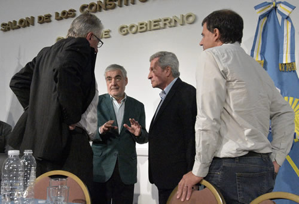
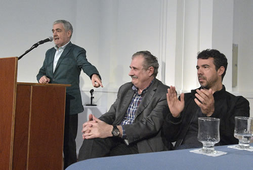
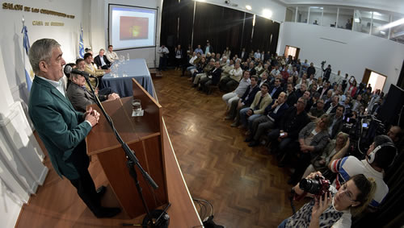

Real Chubut - Agencia de Noticias


Das Neves ratificó su decisión de fijar una fuerte política de Estado para desarrollar la Industria Eólica en Chubut

Lo dijo al encabezar la presentación de una propuesta referida a lineamientos que la Provincia debe seguir con una visión de desarrollo económico. Se habló del potencial chubutense a nivel mundial y de la necesidad que todos los sectores se involucren.
El gobernador del Chubut, Mario Das Neves, ratificó este sábado su firme convicción de la necesidad de fijar en la provincia una fuerte política de Estado tendiente al desarrollo de la Industria Eólica que involucre a todos los sectores políticos y de la sociedad. “Desde el primer día de gestión, más allá de las cuestiones que hay que abordar a diario, nos preocupa y ocupa la matriz productiva de nuestra provincia a futuro” dijo el mandatario al encabezar un acto en el que se presentó una propuesta en relación a definir los lineamientos que debe seguir la Provincia para potenciar esta actividad con una visión de desarrollo económico que vaya más allá del negocio de la venta de energía a partir del recurso renovable.
Ante un colmado Salón de los Constituyentes de la Casa de Gobierno por la presencia Cámaras de Comercio, Cooperativas y sectores industriales, Das Neves recordó que “les dije que venía, de alguna manera, a dar un paso importante hacia adelante: a dejar establecidas políticas de Estado, donde todos estemos juntos más allá de la representación, de los espacios políticos o sectoriales”, y afirmó: “creo que cuando hay objetivos claros que tienen que ver fundamentalmente con el futuro de Chubut, hay un acompañamiento sobre todo cuando se habla con la claridad con la que nosotros estamos encarando esto”.
Efectivamente la participación de distintos sectores marcó lo que fue el acto. El diputado provincial Jerónimo García, que viene de presidir un encuentro con distintos sectores para potenciar la industria eólica, fue el encargado de la apertura para dar paso luego al ingeniero industrial, Luciano Di Paolo. Este profesional de amplia trayectoria, presentó la propuesta en sí que incluyó un análisis del contexto nacional, el potencial que tiene Chubut en el mundo en materia de energías renovables y los beneficios en materia económica que brindará a la provincia el desarrollo de esta industria, en tanto que el ingeniero Ismael Retuerto, que dirige la empresa NRG Patagonia, se explayó sobre la experiencia de la firma a nivel local y las actuales dificultades a nivel país.

“Tenemos poder de decisión”
Das Neves dejó en claro que seguirá defendiendo los intereses de Chubut ante intentos de avances de la Nación. Fue así que reiteró su defensa de los reembolsos por puertos patagónicos “porque protegen a parte de nuestras industrias” dijo, además de recalcar como importante el hecho “que me he sentido escuchado” por las autoridades nacionales cada vez que planteó reclamos “con el respeto que corresponde”.
Por eso insistió en “el poder decisión” de la provincia ante la Nación. “La naturaleza nos ha colocado en un terreno en el que hay muchas cosas por hacer. No hay que esperar que todo venga de Buenos Aires. Nosotros tenemos poder de decisión. Y digo más, si nos animamos tenemos mucho más poder de decisión de lo que puedan darnos desde el nivel Nacional porque lo hacemos con convicción, desde el convencimiento”.
También el gobernador destacó “el recurso humano” con el que cuenta la provincia y ahí fue que elogió la presencia de Héctor Mattio, un referente de la energía eólica y ex director del Centro Regional de Energía Eólica (CREE), “Esto demuestra claramente cuántas cosas podemos plantear en una mesa que difícilmente las escuchemos en otros lugares” afirmó y narró una anécdota del año 2004 cuando un ministro nacional le dijo: “me tenés que dar a Mattio porque no tengo a nadie en energía eólica en el país”.
Por eso y tras escuchar a los especialistas como Di Paolo, dijo el gobernador que se avanzará en fijar una política de Estado para apoyar el desarrollo de la industria eólica, “si uno ve en el mundo los países que están en esto, claramente ese el camino que hay que seguir” afirmó en relación a los avances en Estados Unidos, China, España o India.
Para finalizar declaró: “esta es una oportunidad inédita, creo que estamos en condiciones de hacerlo, lo necesitamos, lo necesita nuestra gente” y agregó un dato revelador: “de cada 10 entrevistas que me piden empresas de distintas actividades, por los menos 6 o 7 tienen que ver con este tema. El interés está. Y a veces a uno le preocupa porque no tiene la respuesta adecuada. Yo creo que a partir de ahora vamos a tener una respuesta adecuada y vamos a trabajar todos juntos en este tema que nos va a hacer muy bien”.

Potencial y reparación histórica
El diputado provincial, Jerónimo García, valoró como “un logro” a la presentación porque dijo “a veces se critica la falta de políticas de Estado” y afirmó que “el desarrollo de la industria eólica puede ser el puntapié inicial para un cambio en la provincia”, dado que “una asignatura pendiente es la industrialización”. Dijo además que “más de la mitad de la capacidad instalada de Argentina está en Chubut” y valoró que se esté “primero hablando de política de Estado” antes que de nombres.
Luego el ingeniero Luciano Di Paolo, un experto en la materia realizó la presentación de la propuesta instando a que Chubut “maneje su propio destino”. La presentación se basó en varios ejes: el contexto, el desarrollo eólico español, la situación de Chubut, y la experiencia local, entre otros.
Planteó el especialista “solicitar una reparación histórica” que debe ser pactada con el Gobierno Nacional, “lo que significa que le den a Chubut las condiciones necesarias, como una tarifa preferencial para desarrollar una política industrial” describió e instó a “revertir la histórica política extractiva”. Dio cuenta de las ventajas de esta industria en Chubut en relación a la creación de miles de puestos de trabajo, la reducción en la emisión de dióxido de carbono y como conclusiones planteó: el cambio de la matriz energética hacia energías renovables destacando que la eólica es la alternativa más conveniente.
Además remarcó que “Chubut tiene un gran potencial eólico” y dijo que “hay que aprovechar el liderazgo del gobernador Das Neves que es muy importante para que la energía eólica sea el motor del desarrollo”. Y dejó en claro que se puede avanzar citando ejemplos en el mundo de cómo se ha crecido esta industria en países como España.
PUBLICIDAD